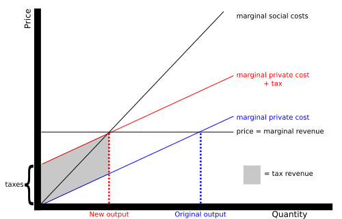
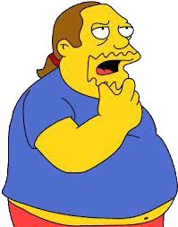

Fat tax
A fat tax is a tax or surcharge that is placed upon fattening food, beverages or on overweight individuals.

Angel, Jimmy, Michaels, Ulysses
A Pigovian tax is a tax on any market activity that generates negative externalities.

A fat tax is a tax or surcharge that is placed upon fattening food, beverages or on overweight individuals.
Numerous studies suggest that as the price of a food decreases, individuals get fatter.

The mechanism may not work as expected.
What products should be targeted?
Fat tax can be burdensome for the poor.
(TODO)